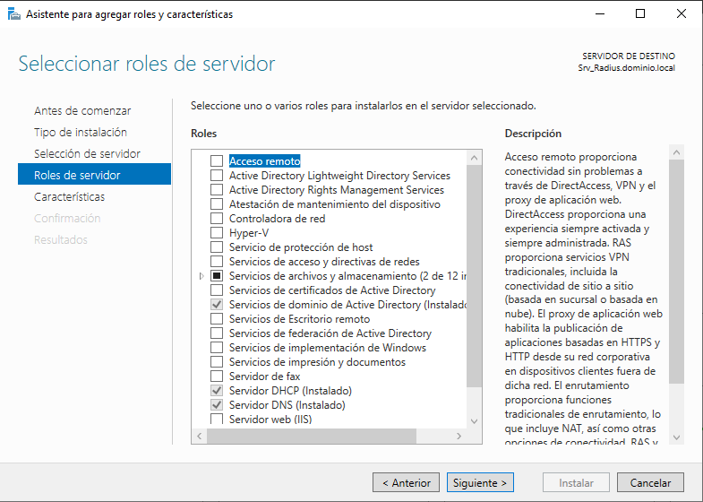

2. Instalación/Configuración Servidor/Cliente RADIUS en Windows Server 2019
1. Instalación del servidor Radius
Figura 1. Esquema de la instalación.
Partimos de un equipo con Windows Server 2019 Datacenter al cual le instalamos el rol de Servicios de dominio Active Directory (AD DS), para configurar un dominio llamado dominio.local. La instalación de este rol, conlleva la instalación de DNS. Adicionalmente, también se instala un servidor DHCP, para gestionar los equipos de la misma red de dominio.
Figura 2. Administrador del servidor.
En caso de necesitar ayuda para la instalación de estos requisitos previos, a continuación tienes una guía completa de instalación de un servidor Windows Server 2016, que es totalmente traducible a la versión 2019.
A continuación, se comienza con la instalación del servidor Radius en Windows Server 2019 Datacenter.
En primer lugar, se inicia el Administrador del servidor y en Administrar (arriba a la derecha) hay que marcar Agregar roles y características.

Figura 3. Seleccionar 'Agregar roles y características'
Figura 4. Pantalla inicial del asistente.
Una vez abierto el asistente, hacemos clic en Siguiente, aparece una nueva pantalla donde 'Marcamos' nuestro servidor de la lista. Dado que sólo tenemos un servidor en la red, sólo aparece el nuestro.
Figura 5. Selección del servidor de destino.
A continuación, pulsamos Siguiente y aparece una nueva pantalla donde hay que seleccionar el rol 'Servicios de acceso y directivas de redes'. Es frecuente que la instalación de un rol traiga aparejada la necesidad de instalar algunas herramientas y utilidades llamadas características. El asistente nos muestra con detalle qué va a necesitar de forma complementaria. Hacemos clic sobre el botón Agregar características.

Figura 6. Selector de roles.
Es frecuente que la instalación de un rol traiga aparejada la necesidad de instalar algunas herramientas y utilidades llamadas características. El asistente nos muestra con detalle qué va a necesitar de forma complementaria. Hacemos clic sobre el botón Agregar características'.
Figura 7. Agregar características para el rol.
Figura 8. Rol y características seleccionadas.
El asistente lleva a una pantalla, sin otra función más que introducir la funcionalidad que se ha incorporado al servidor. Hay que hacer pulsar el botón Siguiente para que comience el proceso de instalación propiamente dicho.
Figura 9. Funcionalidad lista para instalar.
A continuación, el asistente muestra una nueva pantalla informativa sobre NPS. Para continuar, hay que pulsar 'Siguiente'.
Figura 10. Pantalla informativa.
Comienza el proceso de instalación del rol.
Figura 11. Proceso de instalación del rol.
El proceso anterior realizado mediante la GUI se puede simplificar realizando la instalación desde PowerShell con credenciales de administrador. El comando a utilizar es el siguiente:
PS C:\>Install-WindowsFeature NPAS -IncludeManagementTools
Por defecto, NPS escucha el tráfico RADIUS en los puertos 1812, 1813, 1645 y 1646 en todos los adaptadores de red instalados. Si el Firewall de Windows con seguridad avanzada está activado al instalar NPS, se crean automáticamente reglas para estos puertos.

Figura 12. Reglas creadas automáticamente para NPS.
En el caso de que el sistema no creara las reglas, habría que crearlas para permitir el tráfico de entrada en esos puertos.
A nivel de data carving, NPS tiene la funcionalidad de almacenamiento de todos los registros generados por las cuentas en:
- Una base de datos en un servidor SQL
- En un archivo de texto en la maquina local, por defecto situado en C:\Windows\System32\LogFiles
- Simultáneamente en un servidor SQL y un archivo de texto.
Desde el punto de vista de la seguridad, RADIUS tiene debilidades relacionadas con uso del protocolo UDP. Su arquitectura le hace propenso a:
- Ataques de fuerza bruta sobre las credenciales del usuario.
- Denegación de servicio.
- Ataques de repetición de sesión.
- Inyección de paquetes.
3. Instalación de cliente RADIUS
Figura 13. Esquema de la instalación.
El cliente Radius va utilizar Windows Server 2019 DataCenter. Es posible encontrar escenarios donde un servidor realiza varias funciones para aprovechar su capacidad, aunque a nivel de seguridad pueda ser recomendable subdividir funcionalidades en diferentes servidores.
Dado que el escenario está sobre el dominio.local, lo que hay que realizar es integrar el cliente Radius en el dominio.local como un cliente más, sin funciones de controlador de dominio.
Figura 13. Integración del cliente radius en el dominio.
A continuación, vamos a instalar el rol 'Enrutamiento y acceso remoto', para ello, abrimos el Administrador del servidor y seleccionamos Agregar roles y características.
Figura 14. Agregar Roles.
Figura 15. Pantalla inicial del asistente.
Una vez abierto el asistente, hacemos clic en Siguiente, aparece una nueva pantalla donde 'Marcamos' nuestro servidor de la lista. Dado que sólo tenemos un servidor en la red, sólo aparece el nuestro.
Figura 16. Selección del servidor de destino.
Seguimos el procedimiento de asistente visto en la etapa anterior. Realizamos una instalación basada en características o en roles. Seleccionamos Acceso remoto como rol a instalar.
Figura 17. Selección del rol 'Acceso Remoto'.
Figura 18. Selección de características.
La pantalla de presentación de esta función incluye una descripción bastante completa.
Figura 19. Pantalla informativa del rol a instalar.
Acceso remoto es una función bastante amplia que integra diferentes tipos de servicios agrupados en tres áreas:
- DirectAccess y VPN (RAS)
- Enrutamiento
- Proxy de aplicación web
Hacemos clic en Siguiente y marcamos DireccAccess y VPN (RAS). Lo que añade algunas herramientas a la cola de instalación.
Figura 20. Agregar características.
El primero, nos permitirá obtener acceso desde redes externas usando o la tecnología DirectAccess o con VPN. El segundo, dota al servidor de funcionalidad de router. Finalmente, el proxy cumple la función de publicar aplicaciones basadas en la web.
Seleccionamos Agregar características. En el paso siguiente se incluye como requisito la instalación de IIS y de herramientas propias de este tipo de servidor. Como muchos de los roles, requiere configuración previa una vez instalado.
Figura 21. Instalación como requisito de IIS.
A continuación, hay que pulsar 'Siguiente'.
Figura 22. Selección de servicios de rol para IIS.
A continuación, hay que pulsar 'Siguiente' dejando marcado lo que aparecer por defecto.
Figura 23. Pantalla de confirmación previa al comienzo de la instalación.
A continuación, hay que pulsar 'Instalar' para que comience el proceso de instalación.
Figura 24. Proceso de instalación.
Otra forma de realizar todo este proceso mediante PowerShell es ejecutar el siguiente comando.
PS C:\>Install-WindowsFeature DirectAccess-VPN -IncludeManagementTools
4. Configuración del servidor RADIUS
4.1 Configurar servidor RADIUS por GUI
Una vez configurado el cliente Radius, hay que volver sobre el servidor Radius para realizar una serie de configuraciones. Para ello, abrimos el 'Servidor de directivas de redes' de alguna de las siguientes maneras:
Abrimos el Servidor de directivas de redes desde uno de los tres sitios posibles:
- Desde el Administrador del servidor, en Herramientas.
- Utilizando Herramientas administrativas de Windows desde el menú inicio.
- O desde PowerShell:
Para este caso de estudio, se ejecuta el comando nps.msc dese PowerShell.
PS C:\>nps.msc
Figura 25. Servidor de directivas de redes.
Esta herramienta, como casi todas las basadas en Microsoft Management Console (MMC) está estructurada con un panel izquierdo con estructura en árbol para navegar por las opciones, un panel central con el detalle de lo marcado en el izquierdo y tenemos la posibilidad de agregar un panel derecho con acciones a realizar.
Figura 26. Registrar servidor en Active Directory.
Comenzaremos autorizando al servidor NPS para usar Active Directory en la autenticación de usuarios y grupos. Se hace con clic derecho en NPS y luego registramos el servidor. Además, esto permite el control de usuarios a través de las propiedades de marcado.
Creamos un usuario del dominio y seleccionamos en Marcado 'Controlar accedo a través de la directiva de red NPS'.
Figura 27. Marcado.
El usuario creado es:
- Nombre y apellidos: Usuario Radius
- cuenta: radiustest.
- password: password123456.
- pertenencia a grupos: radius.
Figura 28. Grupo de seguridad y global creado.
En la pantalla de presentación, vemos como se nos solicita configurar el servidor de directivas de redes.
Figura 29. Pantalla de presentación.
Podemos elegir dos perfiles de servidor:
- Para conexiones VPN o de acceso telefónico.
- Para conexiones cableadas o inalámbricas 802.1X.
Para este escenario, se va a implementar un Servidor RADIUS para conexiones VPN, donde se desea controlar el acceso desde el exterior. El otro perfil está destinado a securizar las redes internas de una organización ya sea usando algún tipo de cableado o conexión inalámbrica.
Hacemos clic sobre `Configurar VPN o Acceso telefónico. A continuación, el asistente muestra una pantalla donde hay que seleccionar la segunda opción y rellenamos un nombre para la directiva, como ejemplo, ponemos 'VPN Administración'. Pulsamos 'Siguiente' para continuar.
Figura 30. Configurar VPN.
En el siguiente paso hay que indicar los clientes RADIUS que se desean incluir. Hay que agregar los que se necesiten, para este escenario, agregaremos sólo uno. Pulsar 'Siguiente' para continuar con el proceso.
Figura 31. Pantalla para agregar los clientes RADIUS necesarios.
Aparece una nueva pantalla donde debemos rellenar lo siguiente:
- Un nombre para el cliente, no tiene porqué ser el nombre de la máquina.
- El nombre de la máquina o la dirección IP, y la debemos validar. Como nuestro cliente dispone de dos tarjetas de red, usaremos la interna (que es la del mismo rango que este servidor).
- Generar o introducir un secreto compartido. Nos advierte de que algunos clientes RADIUS no soportan claves largas y nos podemos ver obligados a modificarla. Para este caso, el secreto es: eeepuc20.
Figura 32. Cliente RADIUS a agregar.
Pulsar el botón 'Aceptar'.
Figura 33. Cliente RADIUS agregado.
También podemos agregar nuevos clientes si navegamos por el panel izquierdo hasta Clientes y servidores RADIUS y después Clientes RADIUS.
Figura 30. Clientes Radius.
Hacemos clic derecho sobre ese elemento y marcamos Nuevo. Apareciendo la ventana para agregar el cliente. En la segunda pestaña es posible indicar el nombre del proveedor, lo dejamos en RADIUS Standard. Si se tratara de un punto de acceso o dispositivo de alguna marca, sería recomendable seleccionarla para aprovechar sus características especiales.
Figura 34. Propiedades del cliente RADIUS.
Siguiendo con el proceso, la siguiente pantalla del asistente permite seleccionar el método de autenticación entre:
- EAP-TLS (certificados).
- PEAP-MS-CHAP v2 (certificados).
- MS-CHAP (contraseñas).
- MS-CHAP v2 (contraseñas).
NPS admite métodos de autenticación basados en contraseña y basados en certificados. Hay que tener en consideración qué métodos admite el cliente para seleccionar uno u otro y no solo el propio interés o la seguridad. Podría ser necesario configurar un tipo para cada una.
Los métodos de autenticación basados en certificados tienen la ventaja de proporcionar una gran seguridad, pero requieren más trabajo de implementación.
Para EAP-TLS se necesita montar una PKI y eso conllevaría a una autenticación con certificados tanto de cliente como de servidor. Con PEAP-MS-CHAP v2 se usa un certificado para la autenticación del servidor y credenciales para los usuarios. No requiere PKI y además podríamos utilizar Active Directory servicios de Certificate Server (AD CS) para la inscripción de certificados en NPS. PEAP-MS-CHAP v2 está especialmente diseñada para portátiles y otros dispositivos. Permite una reconexión rápida sin necesitar volver a autenticar. Por eso se usa más como método de autenticación para las conexiones inalámbricas. Y EAP-TLS por su robusta seguridad para VPN.
Para este escenario y para no complicar esto en exceso, se opta por autenticación por contraseñas.
Básicamente, MS-CHAP v2 es más seguro, proporciona autenticación mutua, claves de cifrado de datos iniciales más fuertes y claves de cifrado diferentes para el envío y la recepción. La clave criptográfica se basa siempre en la contraseña del usuario y en una cadena de desafío aleatoria. Cada vez que se autentifica, se utiliza una nueva cadena. MS-CHAP v1 se utilizaba principalmente en Windows 2000, desde Windows Vista ya no está soportado. Utiliza una clave de cifrado de 40 bits basada en la contraseña del usuario. Solo se utiliza por compatibilidad con dispositivos antiguos.
Seleccionamos MS-CHAP v2.
Figura 35. Pantalla para configurar métodos de autenticación.
En el siguiente paso el asistente solicita indicar los grupos que se verán afectados por esta configuración. Es evidente que se trata de una buena práctica, pues permite sacar o meter de ese grupo a los usuarios que se desean que tengan acceso exterior. Si no se rellena ninguno, afectaría a todos los usuarios del dominio.
Se agrega el grupo 'radius' que se creó con anterioridad y que tiene como miembro al usuario 'radiustest'. A continuación, hay que pulsar siguiente para continuar con el proceso.
Figura 36. Adición del grupo radius.
Para continuar, hay que pulsar 'Siguiente' y aparece una nueva pantalla donde hay que ajustar el filtrado IP. Se puede limitar el tráfico tanto de entrada como de salida, disponer solo acceso a varias direcciones IP, algunos protocolos, etc. En la configuración de la Figura se permite solo el uso del protocolo RDP que utiliza el puerto 3389 tanto en TCP como UDP.
Figura 37. Filtros de entrada para IPv4.
Para continuar, hay que pulsar 'Siguiente' y aparece una nueva pantalla donde hay que configurar el cifrado que se desea permitir para el tráfico entre los clientes y el servidor.
- MPPE significa cifrado punto a punto de Microsoft, y se usa a menudo para conexiones PPTP y conexiones de acceso telefónico.
- 40 bits. Es solo una propuesta por si se necesita compatibilidad.
- 128 bits.
Actualmente, se podrían desmarcar las dos primeras opciones. Si se desmarcan todas, no se usa cifrado. Dejamos activo 128 bits.
Figura 38. Selección de cifrado.
Para continuar, hay que pulsar 'Siguiente' y aparece una nueva pantalla donde el sistema ofrece especificar un nombre de dominio kerberos. Para este escenario, el valor sería dominio.local. La utilidad de rellenarlo está dirigida a simplificar la experiencia del usuario cuando solo se accede desde un dominio, pero si se trabaja con varios, que tienen establecida confianza entre ellos, deja de tener sentido. Para este escenario de ejemplo, NO configuramos nada y pulsamos en 'Siguiente'.
Figura 39. Especificación de un dominio Kerberos.
El asistente presenta un resumen de las directivas que hay que comprobar que esté todo correcto para posteriormente pulsar el botón 'Finalizar'.
Figura 40. Fin del asistente.
Accedemos al 'Servidor de directivas de redes' y comprobamos las Directivas creadas donde se han creado dos tipos de directivas:
- Directivas de solicitud de conexión.
- Directivas de red.
La directiva de conexión, solo define que las solicitudes de autenticación las validará este servidor.
Figura 41. Directiva de conexión.
La directiva de red incluye el resto de opciones configuradas en el asistente. La marca verde indica que es una directiva de conceder acceso y la roja de denegar.
Figura 42. Directiva de red.
Es importante reseñar que en esta consola de administración podemos crear diferentes tipos de plantilla para facilitar la gestión:
- Secretos compartidos. Este tipo de plantilla permite especificar un secreto compartido que se puede reutilizar al configurar clientes y servidores RADIUS.
- Clientes RADIUS. Configura las opciones de cliente RADIUS.
- Servidores RADIUS remotos. Abarca las opciones de servidores RADIUS remotos.
- Filtros IP. Filtros IPv4 e IPv6 como los que hemos visto antes.
En casi todas las etapas del asistente se podría haber utilizar alguna plantilla, si la hubiéramos creado previamente.
Comprobación de las acciones realizadas
Para obtener información de todos los clientes Radius que se han implementado, ejecutamos el cmdlet Get-NpsRadiusClient:
PS C:\>Get-NpsRadiusClient
4.1 Configurar servidor RADIUS con PowerShell
Todo lo descrito en el anterior punto, se puede realizar mediante Porwershell. Una de las máximas de la administración moderna en Windows es que casi todo es posible realizarlo en entorno gráfico y PowerShell.
Se puede Administrar NPS desde la herramienta Servidor de directivas de redes y luego exportar todo lo realizado con el siguiente cmdlet:
PS C:\>Export-NpsConfiguration -Path “C:\NpsConfiguracion.xml”
El fichero xml generado, se puede utilizar para restaurar en un servidor nuevo todo el trabajo realizado. La importación se realiza mediante el siguiente cmdlet.
PS C:\>Import-NpsConfiguration -Path “C:\NpsConfiguracion.xml”
Los clientes RADIUS ser crean con el siguiente cmdlet (es necesario reiniciar el servicio para comprobar que se ha aplicado):
PS C:\>New-NpsRadiusClient -Name “ClienteRADIUS” -Address “192.168.11.253” `
-SharedSecret “eeepc20” `
-VendorName “Radius Standard”
PS C:\>Restart-Service IAS
Si se ha creado alguna plantilla de secreto compartido y se desea verla en pantalla, utilizamos el siguiente cmdlet:
PS C:\>Get-NPSSharedSecretTemplate
Más comandos en la página de Microsoft.
5. Configuración del cliente RADIUS
Continuamos configurando el cliente RADIUS.
Figura 43. Requerimiento de instalación.
En el Administrador del servidor tenemos una alerta para que iniciemos un asistente de introducción. En la primera pantalla el sistema ofrece tres opciones para elegir:
- DirectAccess + VPN
- DirectAccess
- VPN
Figura 44. Asistente.
Marcamos la tercera opción y abre la herramienta 'Enrutamiento y acceso remoto'.
Figura 45. Enrutamiento y acceso remoto.
Otra forma de abrir la herramienta es mediante el cmdlet siguiente:
PS C:\>rrasmgmt.msc
Esta herramienta es una de las más versátiles y utilizadas en un Windows Server. Además, de las que más ayuda podemos encontrar pues está ahí casi sin diferencias desde Windows NT. En ella se puede configurar:
- Acceso telefónico.
- Acceso VPN.
- Conexión entre suscursales.
- NAT.
- Enrutamiento LAN.
La herramienta muestra una ventana partida. En la izquierda se pueden observar los elementos y la derecha el detalle. En la izquierda, seleccionamos nuestro servidor (CLI-RADIUS) con el botón derecho y hacemos clic sobre la opción Configurar y habilitar Enrutamiento y acceso remoto.
Figura 46. Acceder a Configurar y habilitar Enrutamiento y acceso remoto.
Esto lanza un asistente que muestra una pantalla de bienvenida. Pulsamos en Siguiente.
Figura 47. Pantalla de inicio del asistente.
Pulsar 'Siguiente' para dar comienzo al proceso. Aparece una nueva pantalla con un listado de opciones, donde elegimos la primera: Acceso remoto (acceso telefónico o red privada virtual).
Figura 48 . Pantalla de selección.
Pulsar 'Siguiente' y en la siguiente pantalla seleccionamos VPN.

instalamosFigura 49. Selección de acceso remoto por VPN.
Pulsar 'Siguiente' y en la siguiente pantalla aparecen las tarjetas de red de nuestro equipo y seleccionamos la que tenga acceso a Internet, pero además hay que marcar 'Habilitar seguridad en la interfaz seleccionada configurando filtros de paquetes estáticos'.
Figura 50. Selección de la tarjeta de red del cliente radius con acceso a internet.
Si se observa la figura superior, se ha renombrado las interfaces de red, una llamada “Interna” y otra “Externa”, esto es muy importante para evitar confusiones de qué interfaz es la de salida a la WAN (externa) o a la LAN (interna).
Pulsar 'Siguiente' y en la siguiente pantalla hay que definir cómo se otorgarán las direcciones IP a los equipos cliente. Podemos elegir entre automáticamente o un rango específico que definamos para las conexiones externas. Es mejor utilizar esto último, porque nos permitirá diferenciar mejor el tráfico.
Figura 51. Selección del modo de asignación de direcciones IP.
Pulsar 'Siguiente' y en la siguiente pantalla, se define el rango de direcciones, para este escenario, se opta por dejar el rango de direcciones entre 192.168.11.100 y 192.168.11.119. Son 20 direcciones en total. Avanzamos.
Figura 52. Selección de rango.
Pulsar 'Siguiente' y en la siguiente pantalla, hay que decidir si se usa un servidor RADIUS para autentificar las conexiones entrantes o se realizará directamente con Enrutamiento y acceso remoto. Seleccionamos las segunda opción, para eso hemos instalado un servidor RADIUS.
Figura 53. Uso de RADIUS.
Pulsar 'Siguiente' y en la siguiente pantalla, se necesita que se indique el servidor RADIUS (puede ser por nombre o IP) y, si se desea, algún servidor alternativo. Dado que en este escenario no se considera que la red vaya a recibir muchas peticiones ni es una función tan crítica como para necesitar respaldo.
Por último, hay que rellenar el secreto compartido que definimos en el servidor RADIUS para este cliente. Porque es importante recordar que se puede establecer uno diferente para cada cliente.
Figura 54. Rellenar datos del servidor radius.
Esta es la etapa en la que necesitamos indicar el servidor RADIUS (puede ser por nombre o IP) y, si lo deseamos, algún servidor alternativo. No consideramos que nuestra red vaya a recibir tantas peticiones ni es una función tan crítica como para necesitar respaldo. Por último, rellenamos el secreto compartido que definimos en el servidor RADIUS para este cliente. Porque es importante recordar que se puede establecer uno diferente para cada cliente.
Se finaliza el asistente con un resumen de lo realizado, donde el Resumen completo es:
- Los clientes VPN se conectan a la siguiente interfaz pública: Externa
- A los clientes VPN se les asigna la siguiente red para el direccionamiento: Interna.
- Las conexiones del cliente se aceptan y se autentican utilizando: un servidor externo RADIUS.
- Se crearán los grupos del servidor RADIUS remoto Servidores de autenticación del Servicio de enrutamiento y acceso remoto de Microsoft y Servidores de cuentas del Servicio de enrutamiento y acceso remoto de Microsoft en la base de datos de NPS.
- Se creará una directiva de solicitud de conexión llamada Directiva del Servicio de enrutamiento y acceso remoto de Microsoft en la base de datos de NPS. La directiva usa los grupos de servidores de cuentas y autenticación.
Figura 55. Resumen de lo configurado.
Al hacer clic sobre finalizar, se iniciará el servicio para su puesta en funcionamiento. Si se recibe un error, es bastante frecuente, puede ser debido a que se necesita habilitar manualmente Enrutamiento y acceso remoto en el Firewall de Windows.
Figura 56. Advertencia, pulsamos Aceptar
En ocasiones puede salir la siguiente advertencia:
Figura 57. Advertencia para modificar el Firewall.
Si sale la advertencia, hacemos: Vamos a Windows Defender Firewall (Ver Figura).
Figura 58. Reglas del Firewall.
Una vez dentro pulsar en 'Reglas de entrada / Nueva Regla' (aparece a la derecha) y hay que ir seleccionando lo siguiente:
- Puerto.
- TCP y en específico hay que poner 3389.
- Marcar "permitir la conexión".
- Hay que dejar seleccionado: Domino, Privado y Público.
- Por último, hay que poner un nombre descriptivo y una descripción (opcional), para este caso, el nombre es: Puerto-Enrutamiento-Remoto.
Referencia:
En el caso de tener un router con conexión a Internet, no hay que olvidar de abrir (suele ser vía Port Forwading) para hacer un NAT de la IP pública a la dirección IP interna.
Se volverá a abrir la herramienta pero ya habilitada. Hacemos clic derecho sobre nuestro cliente Radius en el panel de la izquierda y posteriormente en Propiedades.
Figura 59. Herramienta habilitada.
Seleccionamos la pestaña Seguridad y luego en el botón Métodos de autenticación. Por defecto, intenta dejar marcado el método más seguro, que es EAP. Nosotros solo vamos a utilizar MS-CHAP v2. Aceptamos. El resto de opciones de Seguridad las dejamos como están. Al hacer clic en el botón aceptar es posible que se reinicie el servicio y tarde un poco en implementar la configuración.
Figura 60. Seguridad.
Seleccionamos la pestaña Seguridad y luego en el botón Métodos de autenticación. Por defecto, intenta dejar marcado el método más seguro, que es EAP. Nosotros solo vamos a utilizar MS-CHAP v2. Aceptamos. El resto de opciones de Seguridad las dejamos como están. Al hacer clic en el botón aceptar es posible que reinicie el servicio y tarde un poco en implementar la configuración.
6. Configuración de cliente RADIUS con PowerShell
Como se ha indicado anteriormente, se puede el rol desde PowerShell.
PS C:\>Install-WindowsFeature DirectAccess-VPN -IncludeManagementTools
Comprobamos el cumplimiento de prerrequisitos:
PS C:\>Install-RemoteAccess -PreRequisite
Procedemos a la instalación de VPN:
PS C:\>Install-RemoteAccess -VpnType VPN -RadiusServer 192.168.11.254 `
-SharedSecret “eeepec20” `
-IPAddressRange 192.168.11.230, 192.168.11.249
¿Qué estamos haciendo? En un mismo comando le indicamos que queremos habilitar VPN y le pasamos la configuración RADIUS y el rango de direcciones que vamos a utilizar para conceder a los cientes.
A continuación, hay que reiniciar el servicio:
PS C:\>Restart-Service RemoteAccess
Si se quiere obtener la configuración generada hasta ahora, hay que ejecutar el siguiente cmdlet:
PS C:\>Get-RemoteAccess
Nos falta establecer el servidor RADIUS para autenticación de cuentas y no solo de directivas de acceso. Necesitamos reiniciar el servicio.
PS C:\> Set-RemoteAccessAccounting -EnableAccountingType ExternalRadius -RadiusServer 192.168.11.254 -SharedSecret “eeepuc20”
PS C:\> Restart-Service RemoteAccess
Para listar por pantalla la configuración, ejecutamos el siguiente cmdlet:
PS C:\>Get-RemoteAccessAccounting
Ahora definiremos las seguridad de VPN que utilizaremos mediante el siguiente cmdlet:
PS C:\>Set-VpnAuthProtocol -UserAuthProtocolAccepted MsChapv2 Restart-Service RemoteAccess
Otros cmdlet útiles son:
# Ver el estado de las conexiones actuales
PS C:\>Get-RemoteAccessConnectionStatisticsSummary
# Listado de servidores RADIUS configurados
PS C:\>Get-RemoteAccessRadius
# Obtener un listado de conexiones de un usuario
PS C:\>Get-RemoteAccessUserActivity -UserName “RADIUS\radiustest”
# Desinstala el servidor
PS C:\>Uninstall-RemoteAccess
Para obtener más comandos con los que trabajar puedes acceder a la ayuda de Microsoft.
Figura 61. RRAS sin modo heredado.
Hay que tener en cuenta que administrar el servidor mediante PowerShell conlleva que el uso de la herramienta de interfaz gráfica se deshabilita.
Obra publicada con Licencia Creative Commons Reconocimiento No comercial Compartir igual 4.0